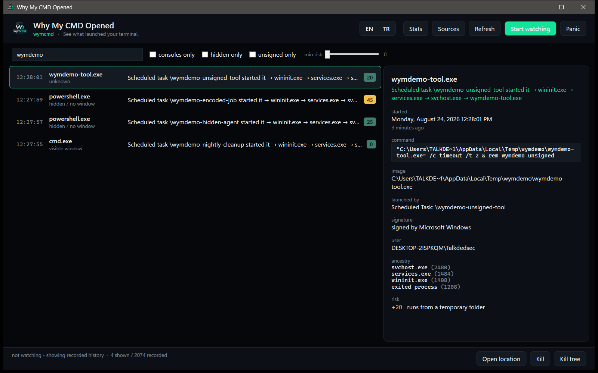

Task Manager is already empty by the time you look. Process Monitor tells you that something ran, never why. wymcmd names the scheduled task, registry key, service, document or click behind it — including launches that happened while wymcmd itself was not running.
> wymcmd why last cmd.exe (pid 24188) Scheduled task \Microsoft\Windows\UpdateOrchestrator\Reboot started it -> svchost.exe -> cmd.exe started Monday, 24 August 2026 03:11:04 (7 hours ago) lifetime 42 ms image C:\Windows\System32\cmd.exe command cmd.exe /c shutdown /r /f /t 0 signature signed by Microsoft Windows window hidden / no window launched by Scheduled Task: \Microsoft\Windows\UpdateOrchestrator\Reboot confidence certain evidence BlackBox, SecurityLog, TaskLog execution history Prefetch 24.08.2026 03:11 (7 hours ago) UserAssist 21.08.2026 19:40 (3 days ago) 12 runs risk: 25/100 +25 no visible window

That is a design decision, not a missing feature. There are five ways for wymcmd to know what happened, and only the last one is a resident process — it ships disabled.
| Mode | Resident | What you get |
|---|---|---|
| Forensic — default | none | Rebuilds history from what Windows already recorded: Security log 4688/4689, Sysmon, Task Scheduler, PowerShell script blocks, Prefetch, BAM, UserAssist |
| Black box — recommended | none | Two ETW AutoLoggers that Windows itself runs, writing into capped circular files — command lines included. No process of ours in memory, no CPU while idle, and it starts recording the moment you enable it |
| Live | only while open | Real-time kernel tracing while wymcmd watch or the window is open |
| Trap | until it expires | “Catch it if it happens again”, with a deadline; it closes itself |
| Watchdog service | yes, opt-in | Round-the-clock rule enforcement, for people who want it |
Nothing is enabled behind your back. sources enable and
blackbox on are the only commands that change the machine, both are explicit, and
wymcmd uninstall --purge puts everything back.
The full ancestor chain, including parents that exited long ago — resolved to the real
cause rather than stopping at svchost.exe.
Scheduled task by name, Run key, Startup folder, service, WMI subscription, Image File Execution Options, installer, Office document, browser download, a terminal, or you double-clicking.
-EncodedCommand decoded into the real script, cmd /c unwrapped,
the script block recovered from PowerShell logging.
A console with no window is the strongest signal something did not want to be seen. Catalog-signed Windows binaries are recognised properly, so system tools are never mislabelled as unsigned.
Prefetch gives the run count and the last eight run times, BAM the exact last run, AmCache the day this machine first catalogued the file and its SHA-1.
A 0–100 score that always shows its reasons, plus the MITRE ATT&CK techniques the evidence already establishes. Nothing is inferred — a technique appears only where the finding behind it is in hand.
Every result carries its sources. A single-artifact guess and a corroborated conclusion do not look the same, so you can tell how much weight a verdict carries before you act on it.
wymcmd install # put it on your PATH (per user, no administrator) wymcmd doctor # see what is available, and what is missing wymcmd sources enable # one-time, elevated, fully reversible wymcmd blackbox on # optional: never miss anything again, nothing resident wymcmd why last # what opened that console? wymcmd # the window
scoop bucket add tlk https://github.com/Talkdedsec/scoop-tlk scoop install tlk/wymcmd
Grab the x64 or arm64 zip from Releases, unpack, run wymcmd.
SmartScreen will warn you the first time. The binary is not code-signed. Every release ships SHA-256 files, and every release after v0.3.1 carries a GitHub build attestation tying the download to the workflow run that produced it:
gh attestation verify wymcmd.exe --owner Talkdedsec
Free for personal and internal use, on any machine you own or administer. The source is published so the tool can be audited — that is the point of a program that reads your event logs — but publishing it does not make it open source, and redistribution and resale are not granted. The full terms are in LICENSE.